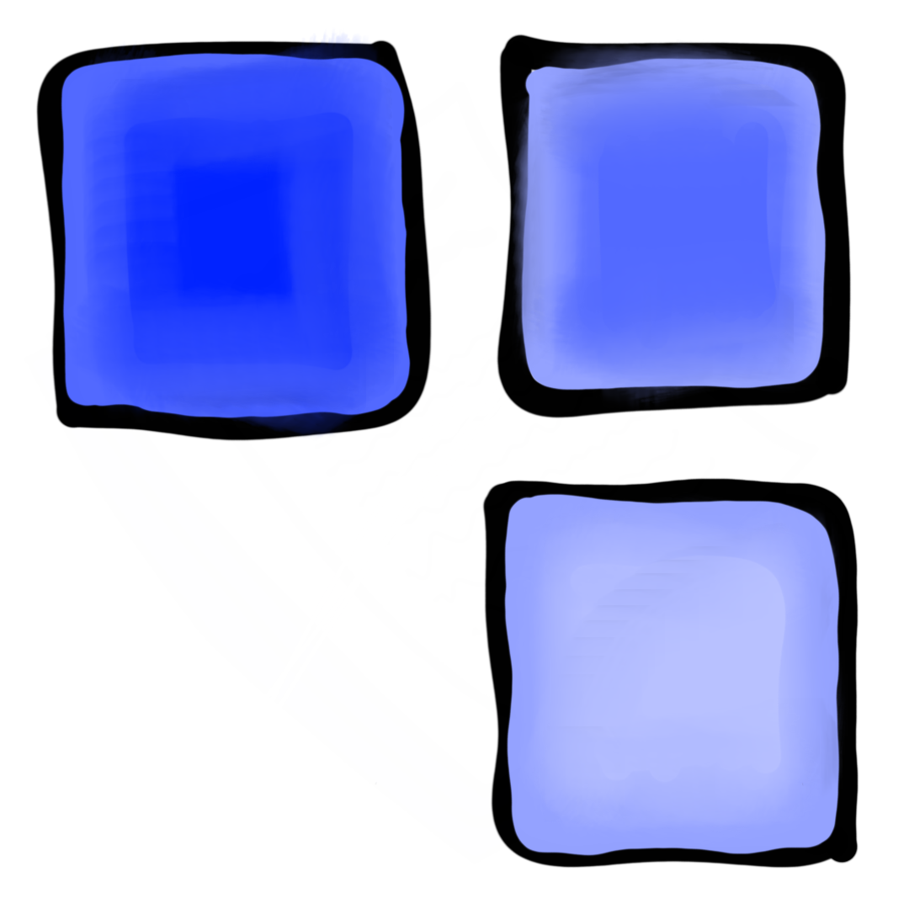
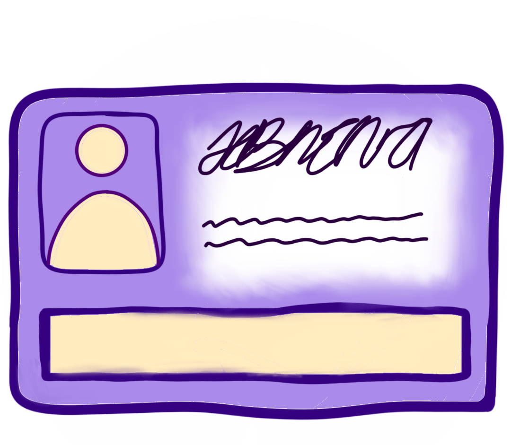

Das Wichtigste für dein Studium
HBK-BS-Portal
Was ist das?
Du solltest regelmäßig, am besten täglich deine Emails checken. Es werden nicht nur Veranstaltungen geteilt, sondern auch die Termine und Deadlines für:
-Die Prüfungsanmeldung in jedem Semester
-Die Aktualisierungen des Vorlesungsverzeichnisses-Den SemesterbeitragWichtig ist außerdem zu checken, ob du im Email-Verteiler deines jeweiligen Studiengangs bist, damit du die Mails ebenfalls bekommst. Du findest es, indem du dich in deinen Account einloggst und in der grauen Leiste unter Anwendungsdienste - Email, Kalender und Adressbuch - Mailinglisten verwalten suchst. Daraufhin wirst du an die Sonia-Seite weitergeleitet, in die du dich auch einloggst. Die Studiengänge müssten dann aufgelistet angezeigt werden. Achtung! Die Studiengänge, die mit einem roten X gekennzeichnet sind, SIND ABONNIERT! Das bedeutet, dass du diese Mails also bekommst. Der grüne Haken bedeutet, dass du diese Mailingliste NICHT abonniert hast. (Keine Sorge, wir sind auch darauf reingefallen)
Stud IP
Was ist das?
Stud IP ist ein Tool für die Organisation deines Studiums in dem du die Termine deiner Veranstaltungen einsehen, dich vor Semesterbeginn für deine Kurse anmelden und mit anderen Studierenden und Dozenten kommunizieren kannst.
- Sobald du einer Veranstaltung hinzugefügt wurdest, kannst du diese in deinem Planer einsehen.
- Bei Termin- und Zeitangaben verlasse dich auf jedenfall auf die Angaben bei Stud IP, NICHT die Termine im Vorlesungsverzeichnis, dort gibt es oft falsche Terminangaben.
- Immer zum neuen Semester solltest du in deinem Profil das Semester ändern, das passiert leider nicht automatisch. Zu finden unter:
Profil - Persönliche Angaben - Studiendaten - Fachsemester
- Im Profil kannst du auch einstellen, dass die Nachrichten, die du in Stud IP bekommst automatisch in deinem Email-Account landen. Sehr Praktisch! Zu finden unter:
Profil - Einstellungen - Nachrichten - "Gesendete Nachrichten auch als E-mail verschicken"
How to...Kursanmeldung
Die Termine für die Kursanmeldungen werden während der Vorlesungsfreien Zeit, per Mail mitgeteilt.
In der Suchleiste bei Stud IP kannst du den Kursnamen, oder noch einfacher die Kurs-Nr. eingeben. Diese findest du im Vorlesungsverzeichnis. Dazu mehr unter dem Abschnitt: Das Vorlesungsverzeichnis - How to... Kursanmeldung
Wenn du den Kurs auf Stud IP gefunden hast, musst du nur noch auf Der Veranstaltung beitreten klicken und bestätigen.
Achtung! Die Teilnehmeranzahl ist immer begrenzt, bei Stud IP ist aber immer angegeben, ob es nach einem Losverfahren ausgewählt wird, oder ob es nach der Reihe der Anmeldungen geht und ab wann du dich anmelden kannst. Auch hier bitte nur auf die Angaben bei Stud IP verlassen.
Losverfahren: Du hast die Möglichkeit Erst-, Zweit-, und Drittwünsche zu äußern, der Erstwunsch wird bei der Verlosung berücksichtigt.
Windhundverfahren: Hier musst du schnell sein. Die Teilnahme erfolgt nach der Reihe der Anmeldungen.
Wenn du bei den Anmeldungen kein Glück hattest (egal ob Windhund- oder Losverfahren), kommst du meistens auf eine Warteliste

HISinOne
Was ist das?
HISinOne benötigst du vor allem für deine Bewerbung an der HBK. Der erste Schritt dich zu berwerben ist es, sich hier zu registrieren. Dafür kannst du den Anweisungen auf der Seite folgen.
Darüber hinaus kannst du auch deine BAföG-Bescheinigung und deine Immatrikulationsbescheinigung abrufen unter: Mein Studium - Studienservice - Bescheide/Bescheinigungen - Allgemein
Zusätzlich sind deine Kontaktdaten dort hinterlegt, die du bei deinem Bewebungsverfahren angeben musst. Falls diese sich im Laufe des Studiums ändert, denke daran sie auch im Portal zu ändern. Da du dieses Portal nach deiner Bewerbung eher selten brauchst, wird das schnell vergessen.
Unter: Mein Studium - Studienservice - Kontaktdaten

Das Vorlesungsverzeichnis (eVV)
Was ist das?
Das Vorlesungsverzeichnis zeigt alle angebotenen Kurse und Veranstaltungen. Du kannst dort sehen, welche Vorlesungen, Seminare, Tutorien und Werkstattkurse es gibt, welche Inhalte behandet werden, ob es Voraussetzungen für diesen Kurs gibt, wie zeitintensiv die Kurse sein werden und wie viele Credit-Points du dafür bekommst.
Du hast dort auch die Möglichkeit die Kurse dem Stundenplan (Oben in der Leiste des eVV zu finden) hinzuzufügen. Achtung! Wird nicht automatisch gespeichert, wenn du die Seite verlässt
How to... Kursanmeldung
Um die Kurse zu finden gehst du auf: Verzeichnis - Bachelor of Arts - Euer Studiengang. Dort wirst du Spalten für die Haupt- und Nebenfächer finden und eine Jahreszahl. Hier wird es ein wenig komplizierter.
Ein Beispiel: Wenn du Kunstwissenschaften als Hauptfach studieren solltest, dann klickst du auf
BA KW 21 HF. Dann werden dir alle Module, die du für dein Studium benötigst, angezeigt.
Die Jahreszahlen stehen für die zu dem Zeitpunkt beschlossene Prüfungsordnungsversion. Wenn du also gerade angefangen hast, zu studieren, klickst du auf die aktuellste Version. In Kunstwissenschaften ist es momentan die von 2021. Wenn im Laufe deines Studiums die Prüfungsordnungsversion aktualisiert wird und eine neue Version erscheint, gilt dennoch für dich weiterhin die Version mit der du dein Studium begonnen hast.
Wenn du dir nun die Kurse ausgesucht hast, die du belegen möchtest, musst du diese bei Stud IP eingeben. Das geht am einfachsten mit der Nummer des jeweiligen Kurses. Diese sind immer 6-stellig und stehen direkt am Anfang der Kursbeschreibungen. Achtung! Nimm die Nummern der einzelnen Kurse, NICHT die Nummer des gesamten Moduls. Außerdem vergiss nicht, dich für alle Kurse einzutragen, die für das Modul erforderlich sind. Wie es dann weitergeht, erklären wir bei Stud IP - How to... Kursanmeldung
Bedeutung der Abkürzungen:
BA - Bachelor of Arts
MA - Master of Arts
MAED - Master of Education
DPO - Diplom
HF - Hauptfach
NF - Nebenfach
Zahl - Erscheinungsjahr einer neuen Prüfungsordnungsversion
Die Vorlesungszeiten
Wann ist was?
Hier kannst du die Vorlesungszeiten einsehen. Dort erfährst du, wie lange das Semester dauert, wann die Vorlesungszeiten beginnen/enden, wann die vorlesungsfreie Zeit und die Winterferien sind.
Wichtige Formulare
Wofür brauche ich das?
Hier findest du eine Übersicht mit allen wichtigen Formularen, für dein Studium. Die relevantesten sind hier die Modulbescheinigungen und Prüfungsanmeldungen, die du in jedem Semester brauchst.
Die von den Dozent*innen unterschriebenen Modulbescheinigungen zeigen, dass du einen bestimmten Kurs oder eine Veranstaltung im Studium erfolgreich abgeschlossen hast. Sie sind ein Nachweis deiner Studienleistungen und Credit-Points. Die vollständig ausgefüllte Modulbescheinigung muss dann bis zur Abgabefrist ans Immatrikulationsamt (I-Amt), als PDF, per Mail geschickt werden.
Die Prüfungsanmeldungen sind wichtig, um auch an den jeweiligen Prüfungen teilnehmen zu können. Sie sorgen dafür, dass du offiziell für die Prüfung eingetragen bist und deine Leistungen anerkannt werden. Diese muss ebenfalls bis zur Abgabefrist der Anmeldungen ans I-Amt, als PDF, per Mail geschickt werden. Achtung! Deine PrüfungsLEISTUNG musst du, in den meisten Fällen, ebenfalls bis zur Abgabefrist der Prüfungsleistungen als PDF ans I-Amt schicken. Dies steht auch (sehr sehr klein gedruckt) auf dem Bogen der Prüfungsanmeldung.

Die HBK-Card
Deine HBK-Card ist ein kleines Allround-Talent. Du benötigst sie als Studienausweis/Semesterticket, zum Ausleihen von Büchern in der Bibliothek, als Türöffner & Zahlungsmittel (Du kannst deine Karte an einem Automaten vor der Mensa mit Bargeld aufladen und so dein Essen bezahlen, oder Druckaufträge in den Werkstätten freigeben, was ebenfalls einen Cent-Betrag kostet.)
Zudem ermöglicht dir diese Karte freien oder ermäßigten Eintritt zu vielen kulturellen Einrichtungen und Veranstaltungen.
Um nur ein paar Beispiele zu nennen:
Staatliches Naturhistorisches Museum Braunschweig (TU-Campus)
Kunstmuseum Wolfsburg
Sprengel Museum Hannover
Denke immer daran, deine Karte am Ende jedes Semesters neu zu validieren, damit sie ihre Gültigkeit behält. Dies kannst du im Eingangsbereich von Gebäude 16 tun, oder in Gebäude 21, im 1. Stock des Treppenhauses. Dort steht ein Automat zum Validieren.
Was dir sonst niemand erzählt
♢ Darstellendes Spiel
♢ Design in der digitalen Gesellschaft
♢ Freie Kunst
♢ Kunst in der Sonderpädagogik
♢ Kunstpädagogik
♢ Kunstwissenschaften & Medienwissenschaften
Du wirst sicher wissen, dass du immer zwischen der HBK und der TU hin und her switchen musst. Wichtig ist hierbei: Die HBK organisiert diese Studiengänge, das heißt, obwohl du viele Kurse an der TU belegst, musst du deine Prüfungsleistungen zwar an die jeweiligen Dozent*innen der Kurse schicken, aber immer an das I-Amt der HBK schicken, nicht an das I-Amt der TU. Frage auch immer nochmal nach welches Format (Als PDF oder ausgedruckt) erwünscht ist, da dies auch von Kurs zu Kurs und von Dozent*in zu Dozent*in unterschiedlich sein kann.
♢ Visuelle Kommunikation
Themenzentrierte Projektarbeit:
Die TZP's sind die einzigen "Kurse" bei denen du dich nicht einfach so über Stud IP anmelden kannst, auch wenn das im Vorlesungsverzeichnis so angegeben ist.
Über Stud IP musst du dich dennoch für die TZP anmelden. Wichtig ist nur, dass du weißt, dass du auf diesem Wege noch nicht offiziell an einer TZP teilnimmst.
Hier spielt sich alles sehr inoffiziell ab. Du kannst die Ansprechpartner*innen direkt fragen, ob du teilnehmen darfst, oder eine eigene TZP gründen, wenn du eine umsetzbare Idee hast. Voraussetzung ist, dass es für die HBK und/oder die Studierenden nützlich/hilfreich ist.
Über den Link kannst du in die Liste der derzeitigen Projektarbeiten einsehen. Ebenfalls können die Dozent*innen Auskunft über bestehende TZP's geben.
→ TZP-Liste